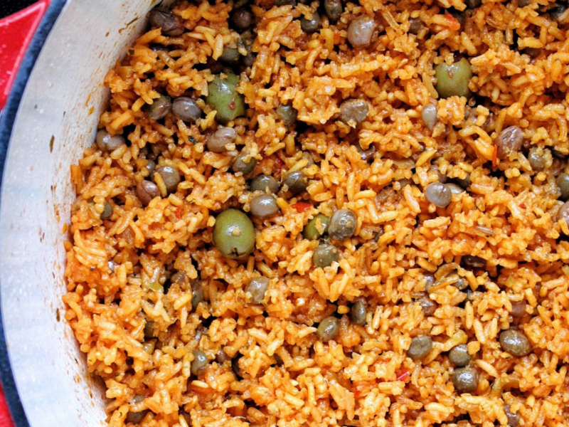

Arroz con Gandules

Arroz con Gandules (or, rice with pigeon peas) is a classic Latin dish that brings me back to the days of grandma's kitchen. Pairs nicely with pork or chicken thighs.
Ingredients
- ¼ cup vegetable oil
- 2 cups long-grain white rice
- ½ cup sofrito
- 4 ounces tomato sauce
- 2 tsp. sazon
- 1 tsp. adobo
- 15 ounces canned gandules (pigeon peas)
- ½ cup Spanish olives (optional)
- 2 cups water
Steps
- Rinse rice until no longer cloudy, then drain
- Heat vegetable oil in a caldero, dutch oven, or other deep pot with a lid over medium-high heat
- Once oil is hot, add rice and cook for 2 to 3 minutes
- Combine sofrito, tomato sauce, sazon, and adobo into a bowl and whisk together; add to rice and mix
- Add gandules (including water in can), olives (optional), and water to rice and mix
- Bring to a boil (without the lid) at medium-high heat until most of the water has evaporated
- Mix rice from edge to center
- Put lid on pot and reduce to low heat
- Cook for 20 minutes until tender, add more salt and/or adobo to taste
NOTE: If rice is mushy, allow the rice to steam out for about 10 minutes without the lid. If rice is undercooked, add ¼ cup of water, put the lid on, and cook on low heat for another 10 minutes.
Recipe by Ali Michell on plantbasedandbroke.com